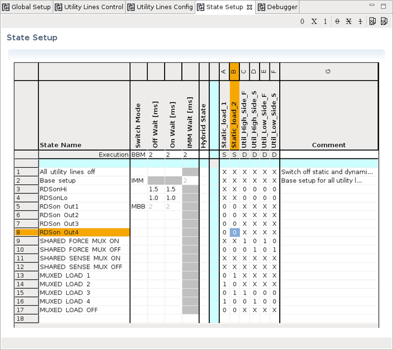
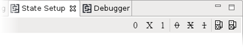
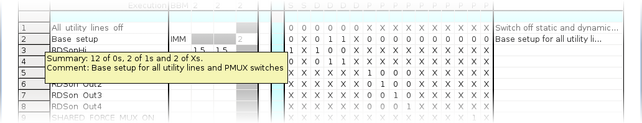
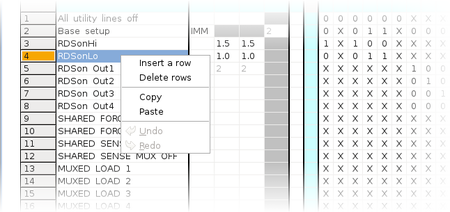
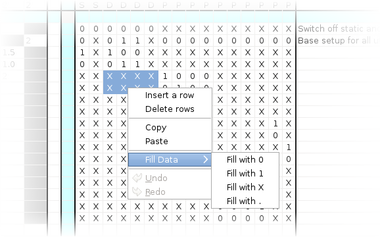
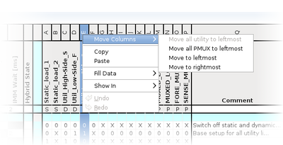
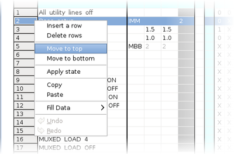
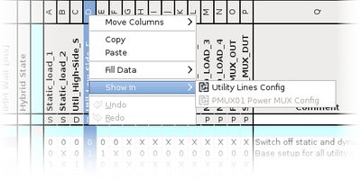

Routing Tools - State Setup editor
The states to be applied can be defined in the State Setup editor. The user defined states hold the switch states for all utility pins and PMUX pins and represent one of the Routing Tools main functionality.
The states are defined once for all sites and are selected and applied by the related functions of SmartRDI.

"State Name" column
The name of the states is defined in the State Name column. The states are referenced by this name when they are selected and applied by the related SmartRDI functions.
The names of the states must be unique for the complete table. Supported characters are:
- Alphanumeric characters A ... Z, a ... z, and 0 ... 9
- Blank character, hyphen, underscore, and dot.
"Switch Mode" column
The Switch mode defines how the states are applied by SmartRDI. The following values are supported:
- BBM: The "Break Before Make" mode means that switch
states "0" are applied first:
- All switch states "0" are applied.
- The Off Wait [ms] settling time is applied if switches have been changed in step 1.
- All switch states "1" are applied.
- The On Wait [ms] settling time is applied if switches have been changed in step 3.
The purpose of this mode is to avoid short circuits between DUT pins or tester resources. A short time where all changed connections are in switch state "0" must be considered for the DUT and the used resources. This mode needs a little more test time for applying the data in two steps and the additional wait time as defined in column Off Wait [ms].
- MBB: The "Make Before Break" mode means that switch
states "1" are applied first:
- All switch states "1" are applied.
- The On Wait [ms] settling is applied if switches have been changed in step 2.
- The switch states "0" are applied.
- The Off Wait [ms] settling is applied if switches have been changed in step 3.
- IMM: The "Immediate mode" means that the switch setup is
applied immediately in one step for all utility pins and PMUX pins:
- All switch state "0" and "1" are applied.
- The IMM Wait [ms] is applied if switches have been changed in step 3.
"Off Wait [ms]" column
The wait time to be applied after switches are changed from closed state to open state can be defined in this column. The value is to be defined in milliseconds [ms]. Fractional numbers are supported. For more information refer to the description of the switch modes above.
"On wait [ms]" column
The wait time to be applied after switches are changed from open state to closed state can be defined in this column. The value is to be defined in milliseconds [ms]. Fractional numbers are supported. For more information refer to the description of the switch modes above.
"IMM Wait [ms]" column
The wait time to be applied for switch mode IMM can be defined in this column. The value is to be defined in milliseconds [ms]. Fractional numbers are supported.
"Hybrid state" column
An exclamation mark points the user to a state which is mixing static utility lines and sequencer‑controlled utility lines or sequencer‑controlled PMUX switches.
You should avoid mixing the static access of utility lines with sequencer control of utility lines or PMUX switches since pattern burst of SmartRDI are interrupted to switch static utility lines in between. The result of mixing is a bad test time and inhomogeneous switching sequences, especially in context with BBM and MBB switch modes.
"Execution" row - Switch Mode and wait times
The default values for the Switch mode, the Off Wait [ms], the On Wait [ms], and the IMM Wait [ms] are defined in the four cells of row Execution. These values are applied if no values are defined in the state setup rows below.
State setup table
The state setup table on the right side contains the data for all states and for all utility pins and PMUX pins.
The header row shows the names of all utility pins and all PMUX pins that have been defined in the Utility Lines Config editor.
- S: Static utility line
- D: Dynamic utility line
- P: PMUX channel
The following rows contain the data per setup that are assigned to these already defined pins.
The switch states to be applied are defined for each stored state and for all utility pins and PMUX pins. The following switch states are supported:
- 0: The channel is inactive:
- Utility line low‑side switch to UGND is open
- PMUX switch is open
- 1: The channel is active:
- Utility line low‑side switch to UGND is closed
- PMUX switch is closed
- X: The utility pin or the switch is not changed.
Filter column and row
The filter column and filter row are highlighted light-blue. You can enter your filter term in this column and row.
The filter for the state setup table supports a logical OR expression using the vertical bar "|": Enter 0|1 to show only columns containing "0" or "1".
Toolbar
The State Setup editor features a toolbar that helps you setting the states.

- Highlight all "0", "X" or "1"
- Hide all "0", "X" or "1"
- Change all empty cells to "0"
- Change all empty cells to "X"
Sorting columns
- Regular alphanumeric
- Reverse alphanumeric
- User defined
Some context functions are available only when "User defined" sorting is active.
Sorting rows
- Regular alphanumeric
- Reverse alphanumeric
- User defined
Mouseover, column width and row height
Often the comment column will not be visible. To display the comment, you can hover the mouse pointer over the leftmost column.
Adapting the column width and the height of the header row is also supported. Position the mouse pointer on the delimiter between two columns in the header row and drag the column width to your needs. Position the mouse pointer on the delimiter of the header row in the first column and drag the row height to your needs.

Examples
Example 1: shortcut menu - Inserting a row

Example 2: shortcut menu - Fill data
 |
To select multiple cells: Click the upper left cell, press Shift and click the lower right cell. |
Example 3: shortcut menu - Move column
 |
Moving columns is also supported by clicking the related cell of the header row (A, B, C, …) and dragging the column to the new position. |
Example 4: shortcut menu - Move row
|
 |
Moving rows is also supported by clicking the related cell of the first column (1, 2, 3, …) and dragging the row to the new position. |
Example 5: shortcut menu - Show in

Functional changes
- Introduced in SmarTest 7.4.4